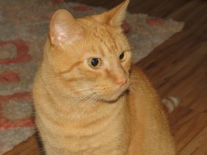

About Us
Noah's Ark's Mission
Noah’s Ark is a family-owned business that provides Pet Services to the locals in Greensburg, Pennsylvania. Since early 2018, we have been helping pet owners take care of their pet’s needs. It is our mission to help humans and animals live the best possible lives together.
Noah’s Ark’s Founder
Noah A. Pape is the founder and CEO of our company. Ever since he could remember, he had a passion for animals. In fact, he loved his cats so much as a kid that he would crawl around on the floor with them and pretend to be one! As he aged, his admiration for animal’s never faded. This fondness eventually turned into a business for him, one that he devotes so much of his time to.
In his free time, Noah likes to watch Netflix, play video games, go on walks, and read. Although, for the most part, you can find him spending quality time with his own pets. He currently has five cats and one dog. One of them, his cat Buddy, can be seen below.
The Future of Noah's Ark
In the future, it is a goal of the company’s to expand to other areas in the state of Pennsylvania, eventually becoming a well-known business. This way, more and more pets will be able to visit us and take advantage of the services that we provides. As our motto says, “There is always room on the Ark for another animal.”